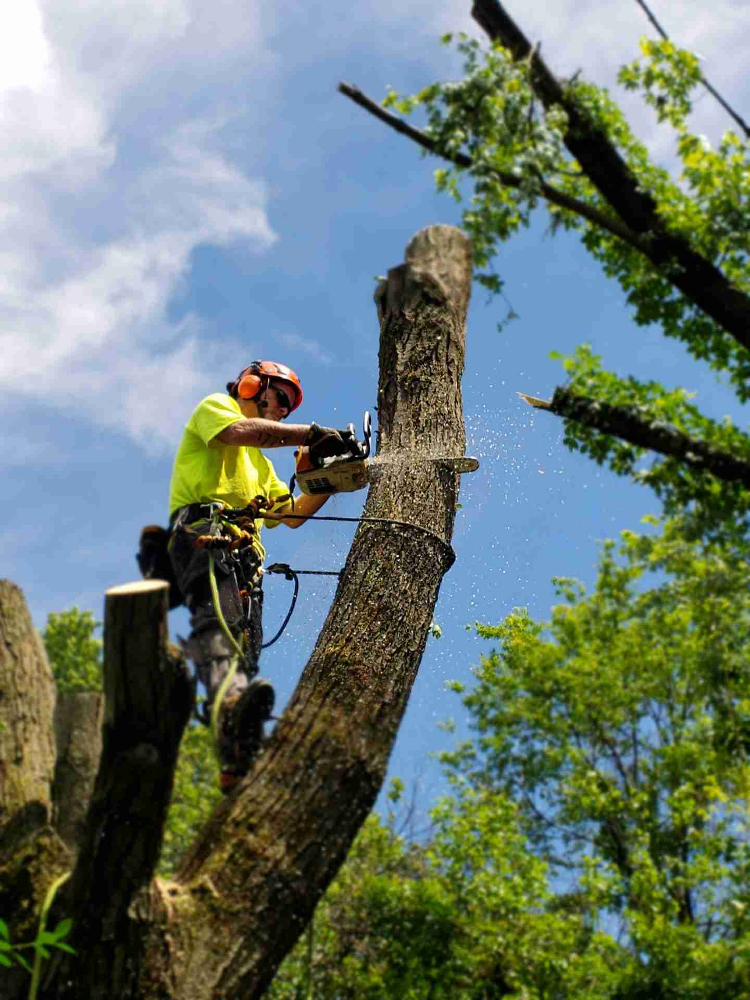
Tree Removal
Make sure your home and property are safe from unstable or damaged trees.
24/7 On-Call Emergency Service
Arrange for tree trimming, removal, stump grinding, and lot clearing with OCTreeTrimming. We help Orange County properties stay safe, clean, and beautiful year-round.
When it comes to tree work, there is not much our crew cannot handle for residential and commercial properties.

Make sure your home and property are safe from unstable or damaged trees.
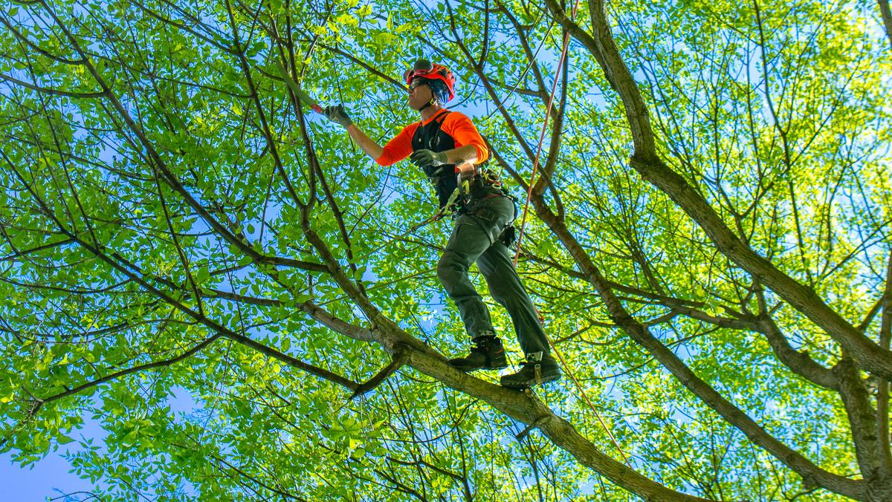
Keep your trees healthy, balanced, and neat with strategic pruning.
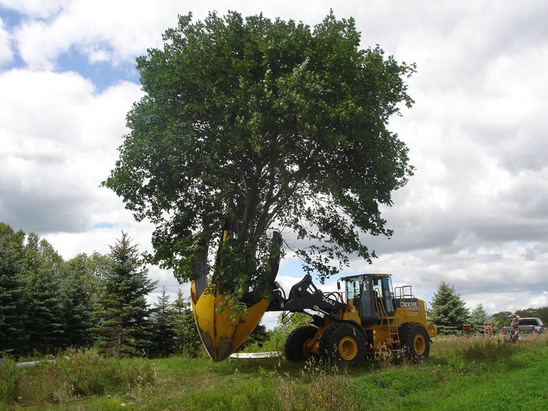
Relocate younger trees and shrubs with minimal stress to the root system.
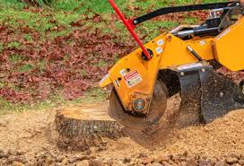
Remove old stumps safely and restore clean, usable space on your property.
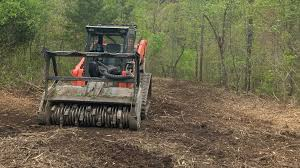
Clear overgrowth while preserving nutrients in your soil.
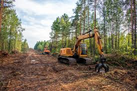
Prepare lots for new builds, hardscapes, and redevelopment work.
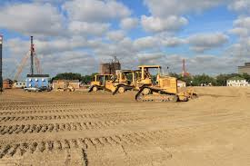
Experienced crews and equipment for safe, efficient project starts.
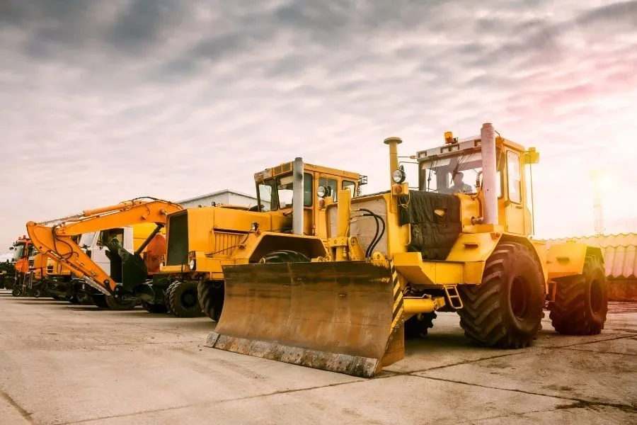
Construction equipment with trained operators for specialized tasks.
Tree removal is not a DIY project. When large limbs or trunks fall unpredictably, the risk to people, homes, and nearby structures is real. Our qualified team handles removals with a safety-first process and the right equipment.
OCTreeTrimming is family operated, uses environmentally friendly methods, and stands behind every completed job.
Serving homeowners, HOAs, businesses, and property managers across OC.
Recent tree removals, crane work, land clearing, and equipment jobs.
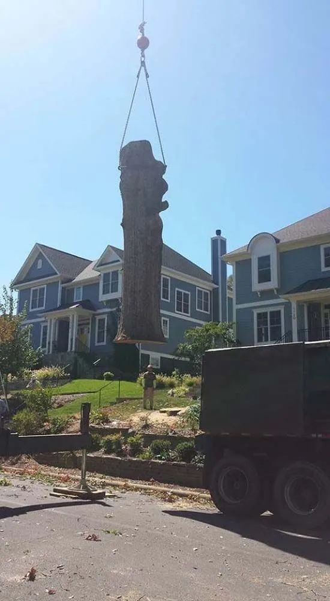
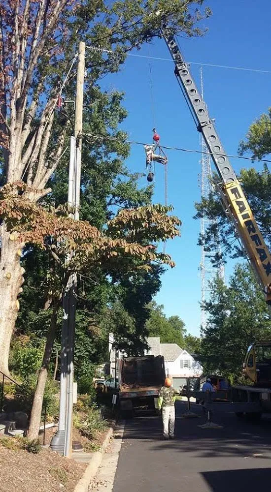
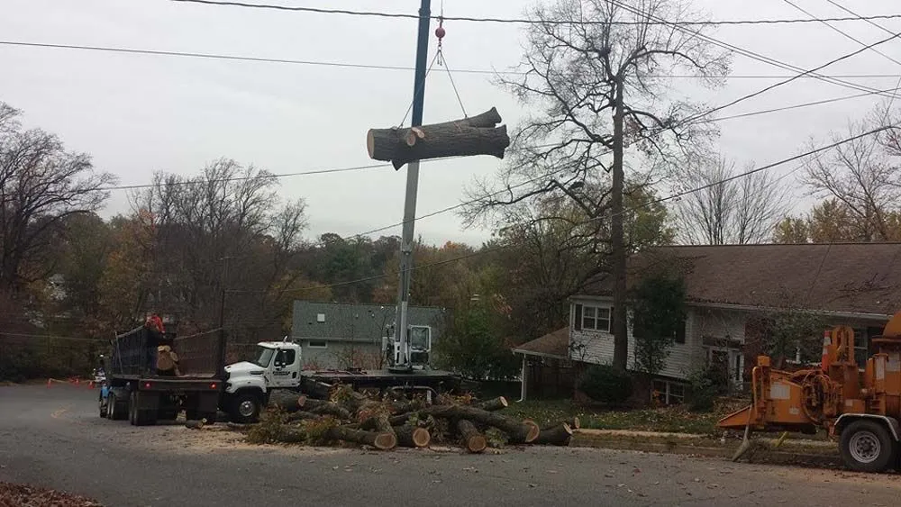
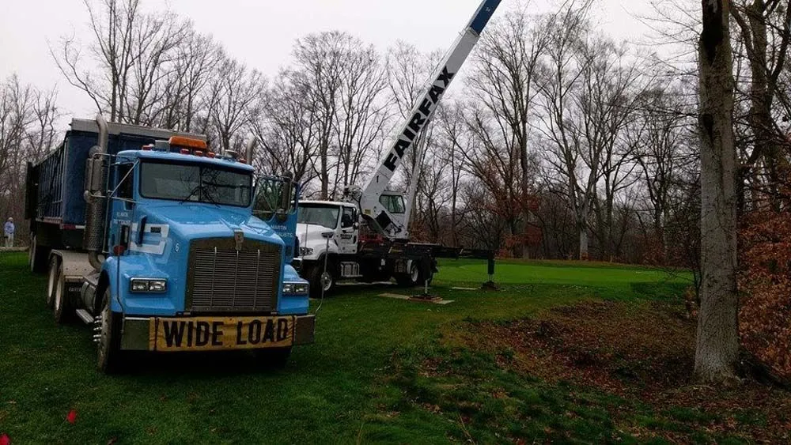
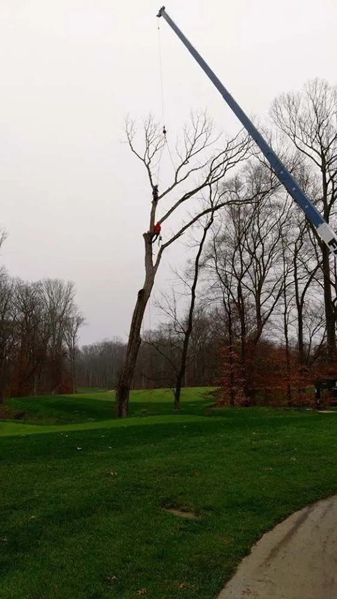
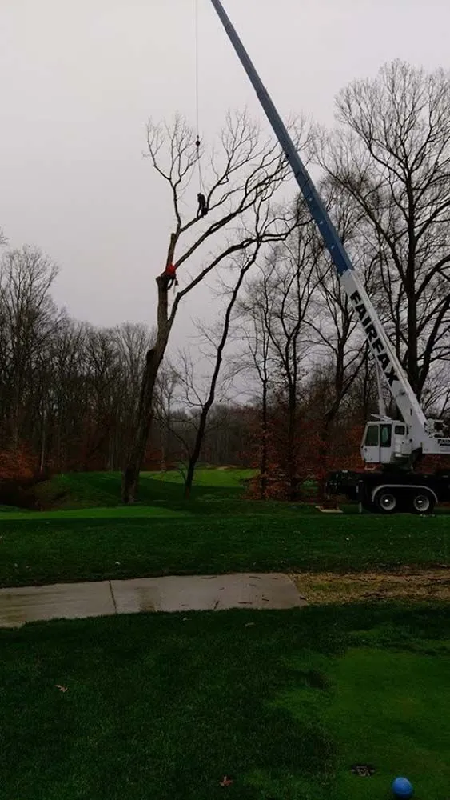
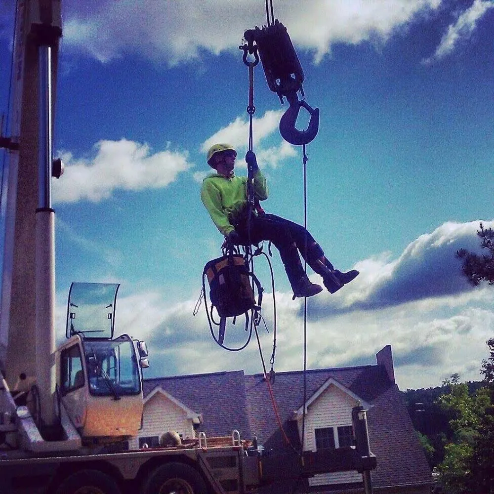
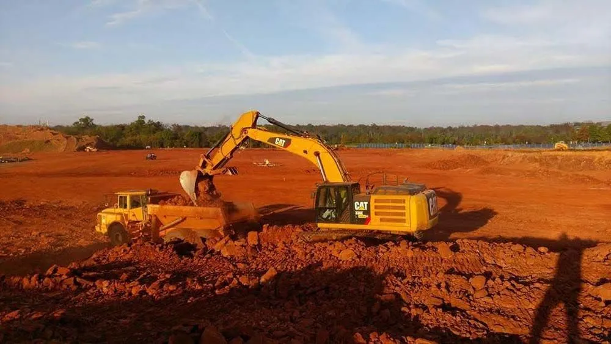
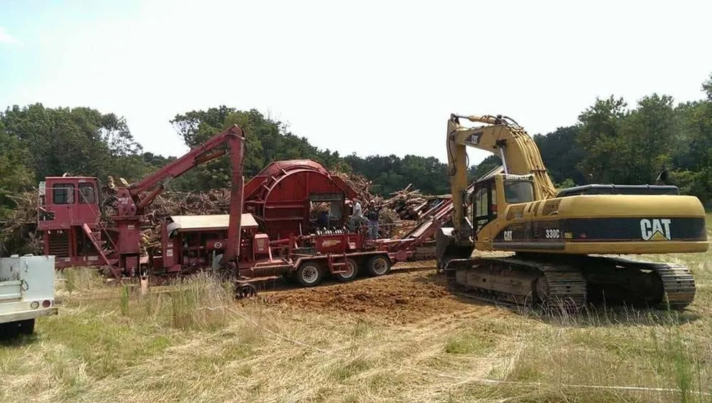
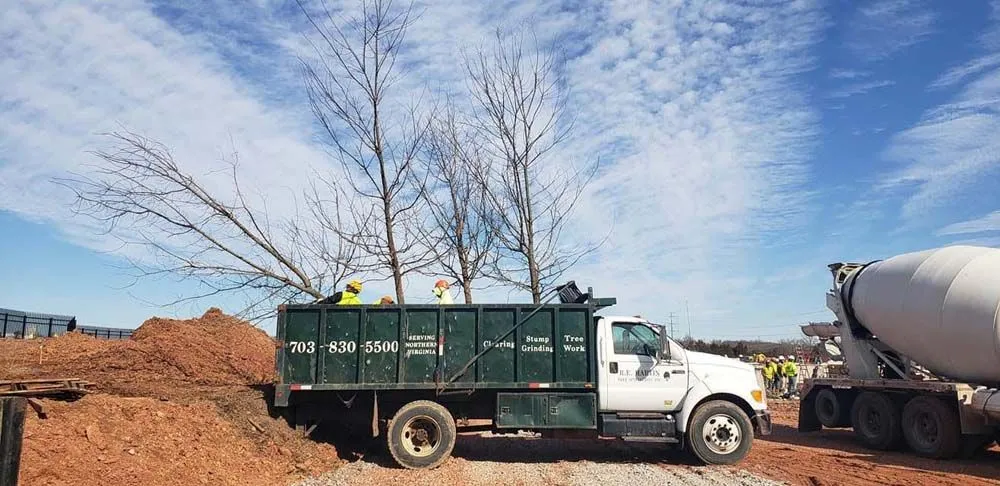
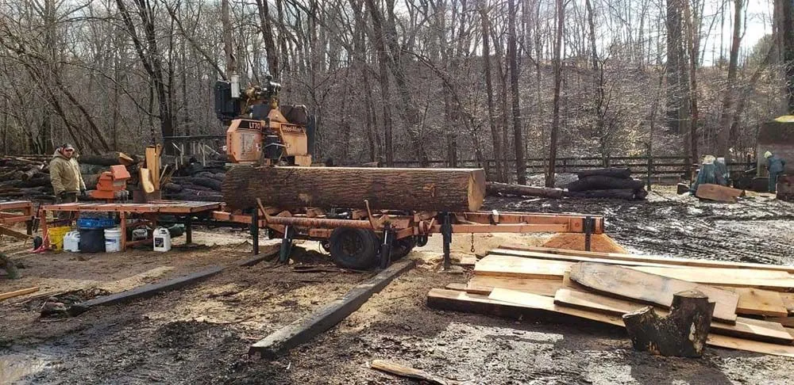
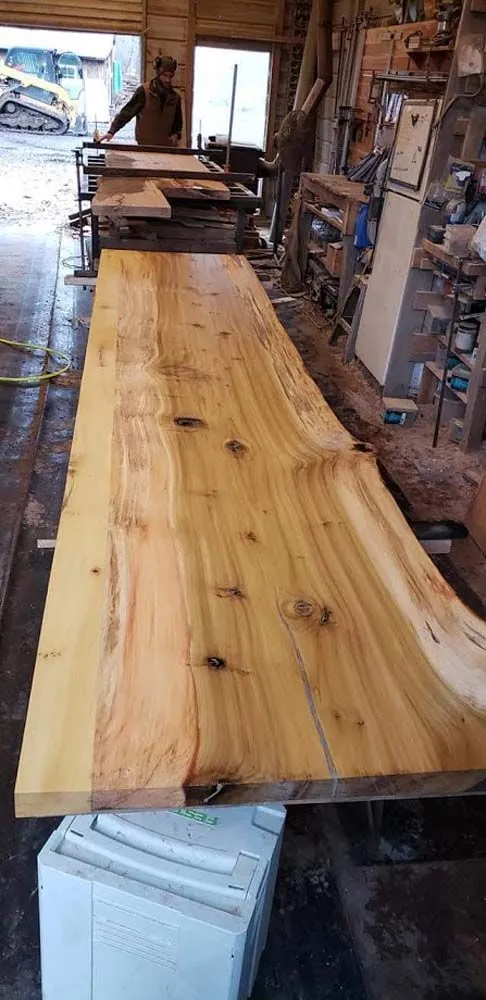
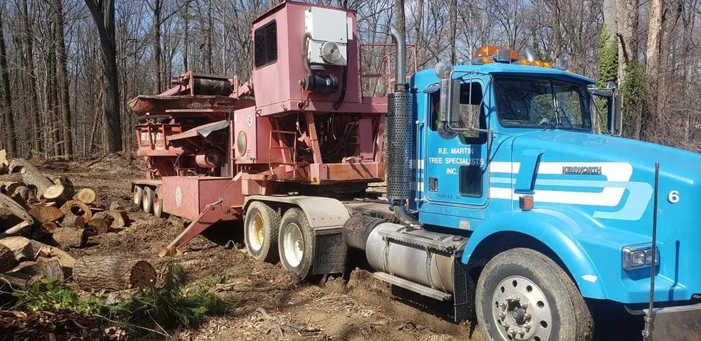